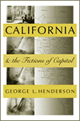
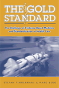
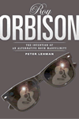

|
|
Across
the Red Line
Stories from the Surgical Life
Karl, Richard C. In the tradition of Lewis Thomas’ The
Lives of a Cell, a beautiful book on what it’s like to be a
surgeon
New in Paperback!
160 pp • 5.5 x 8.25 • Fall 2001
paper 1-59213-193-X
EAN 978-1-59213-193-8
|
|
|
Borscht
Belt Bungalows
Memories of Catskill Summers
Richman, Irwin
A history memoir and photo album of Jewish summers in the Catskills
New in Paperback!
256 pp • 7x10 • Fall 1997
paper 1-59213-190-5
EAN 978-1-59213-190-7
|
| 
|
California
and the Fictions of Capital
Henderson, George L. The development and meaning of agriculture
in late-19th century California
304 pp • 6.125x9.25 • Spring 2003
paper 1-59213-198-0
EAN 978-1-59213-198-3
|
| 
|
Catskill
Culture
A Mountain Rat's Memories of the Great Jewish Resort Area
Brown, Phil A search for one's roots in the resort hotels
of the Jewish Catskills
New in Paperback!
304 pp • 7x10 • Fall 1998
paper 1-59213-189-1
EAN 978-1-59213-189-1
|
|
|
The
Changing of the Guard
Lesbian and Gay Elders, Identity, and Social Change
Rosenfeld, Dana The greatest generation—lesbian and
gay elders, and how they lived their lives from before Stonewall
to today
264 pp • 5.5x8.25 • Spring 2003
paper 1-59213-031-3
EAN 978-1-59213-031-3
cloth 1-59213-030-5
EAN 978-1-59213-030-6
|
| 
|
Elements
of Ethics
Moore, G. E., and Tom Regan Ten previously unpublished lectures
showing Moore's position regarding ethics in relation to conduct
in earlier work differs from the one presented in Principia
New in Paperback!
272 pp • Fall 1991
paper 1-59213-194-8
EAN 978-1-59213-194-5
|
|
|
Ending
Poverty as We Know It
A Constitutional Right to a Job at a Living Wage
Quigley, William P. Why every American should have the right
to a job at a living wage
256 pp • 6x9 • Spring 2003
paper 1-59213-033-X
EAN 978-1-59213-033-7
cloth 1-59213-032-1
EAN 978-1-59213-032-0
|
| 
|
The
Gold Standard
The Challenge of Evidence-Based Medicine and Standardization in
Health Care
Timmermans, Stefan, and Marc Berg
The first book to explore the effects of dramatic changes in the
delivery of medical care
280 pp • 6x9 • Spring 2003
paper 1-59213-188-3
EAN 978-1-59213-188-4
cloth 1-59213-187-5
EAN 978-1-59213-187-7
|
| 
|
Labor's
War at Home
The CIO in World War II
Lichtenstein, Nelson
A new edition of a classic book on how World War II changed the
face of labor in the US
352 pp • 6x9 • Spring 2003
paper 1-59213-197-2
EAN 978-1-59213-197-6
cloth 1-59213-196-4
EAN 978-1-59213-196-9
|
| 
|
Managing
Sickle Cell Disease in Low-Income Families
Hill, Shirley A. A comprehensive account of SCD and its
affect on low-income families
New in Paperback!
240 pp • 5.5x8.25 • Fall 1994
paper 1-59213-195-6
EAN 978-1-59213-195-2
|
| 
|
New
Jack Jocks
Rebels, Race, and the American Athlete
Platt, Larry The hero and anti-hero in contemporary sport,
from a best-selling journalist
New in Paperback!
208 pp • 5.5x8.25 • Spring 2002
paper 1-59213-191-3
EAN 978-1-59213-191-4
|
|
|
Officially
Gay
The Political Construction of Sexuality by the U.S. Military
Lehring, Gary L. How the military defined homosexuality
and the ways that shaped the gay and lesbian identity and movements
248 pp • 5.5x8.25 • Spring 2003
paper 1-59213-035-6
EAN 978-1-59213-035-1
cloth 1-59213-034-8
EAN 978-1-59213-034-4
|
|
|
Organizing
Access to Capital
Advocacy and the Democratization of Financial Institutions
Squires, Gregory D. Gaining financial equality through community
activism
248 pp • 7x10 • Spring 2003
paper 1-59213-026-7
EAN 978-1-59213-026-9
cloth 1-59213-025-9
EAN 978-1-59213-025-2
|
|
|
Out
of the Jungle
Jimmy Hoffa and the Remaking of the American Working Class
Russell, Thaddeus A provocative and controversial account
of the rise of Jimmy Hoffa
296 pp • 6x9 • Spring 2003
paper 1-59213-027-5
EAN 978-1-59213-027-6
|
|
|
Press
Box Red
The Story of Lester Rodney, the Communist Who Helped Break the
Color Line in American Sports
Silber, Irwin, and Jules
Tygiel How a journalist gave the Daily Worker its
first sports column, and broke the color barrier in sports in the
process
256 pp • 6x9 • Spring 2003
paper 1-56639-974-2
EAN 978-1-56639-974-6
cloth 1-56639-973-4
EAN 978-1-56639-973-9
|
|
|
Reclaiming
Class
Women, Poverty, and the Promise of Higher Education in America
Adair, Vivyan C., and Sandra L. Dahlberg The double-edged
impact of policy and education in the lives of poor women
280 pp • 6x9 • Spring 2003
paper 1-59213-022-4
EAN 978-1-59213-022-1
cloth 1-59213-021-6
EAN 978-1-59213-021-4
|
| 
|
Roy
Orbison
The Invention of an Alternative Rock Masculinity
Lehman, Peter Fans called this singer/songwriter "The Voice"
224 pp • 6x9 • Spring 2003
paper 1-59213-037-2
EAN 978-1-59213-037-5
cloth 1-59213-036-4
EAN 978-1-59213-036-8
|
|
|
The
Sons and Daughters of Los
Culture and Community in L.A.
James, David E. Breathing a new city of Los Angeles to life,
through urban art and performance
264 pp • 7x10 • Spring 2003
paper 1-59213-013-5
EAN 978-1-59213-013-9
cloth 1-59213-012-7
EAN 978-1-59213-012-2
|
| 
|
Their
Day in the Sun
Women of the Manhattan Project
Howes, Ruth H., Caroline C. Herzenberg, and Ellen C. Weaver
The hidden story of the contribution of women in the effort to
develop the atomic bomb
New in Paperback!
280 pp • 6x9 • Fall 1999
paper 1-59213-192-1
EAN 978-1-59213-192-1
|
|
|
Why
I Burned My Book and Other Essays on Disability
Longmore, Paul K. "Personal inclination made me a historian.
Personal encounter with public policy made me an activist."
288 pp • 6x9 • Spring 2003
paper 1-59213-024-0
EAN 978-1-59213-024-5
cloth 1-59213-023-2
EAN 978-1-59213-023-8
|
|
|
Yo'
Mama!
New Raps, Toasts, Dozens, Jokes, and Children's Rhymes from Urban
Black America
Jemie, Onwuchekwa "Word Magic"
from the streets of the inner city
344 pp • 6x9 • Spring 2003
paper 1-59213-029-1
EAN 978-1-59213-029-0
cloth 1-59213-028-3
EAN 978-1-59213-028-3
|
Click here
to download the catalog. |